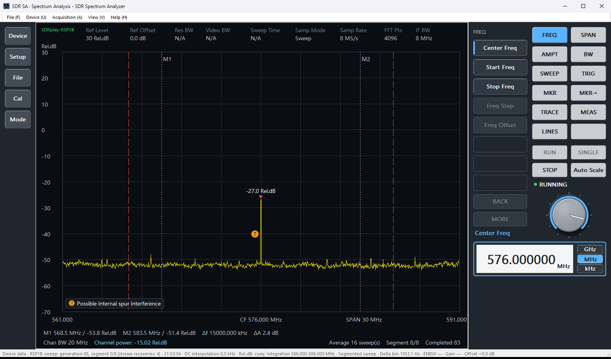
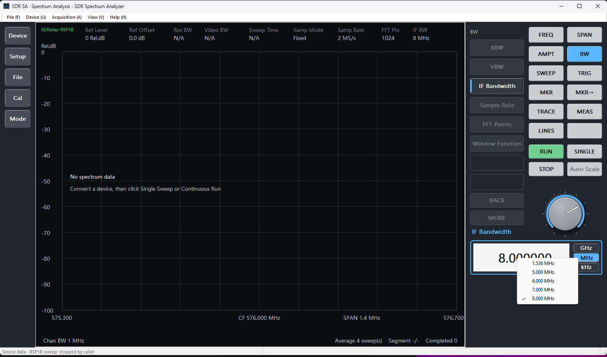
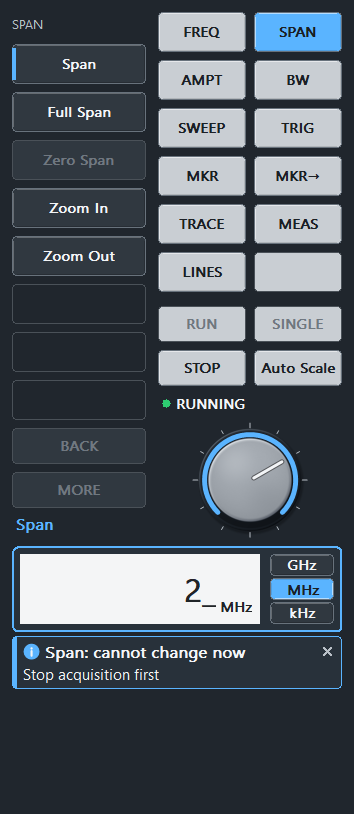

SDR Spectrum Analyzer User Guide
PDF version of this guide (user-guide.pdf)
Product: SDR Spectrum Analyzer Publisher: Mattino 507 Software Version: 1.2 Last updated: November 2026
1. Introduction
SDR Spectrum Analyzer is a Windows desktop application for viewing and analysing RF spectrum data with supported USB software-defined radio (SDR) hardware. Version 1.2 works with two device families:
- RTL-SDR: tested RTL2838-based receivers with an R820T-series tuner.
- SDRplay RSP1B: the RSP1B receiver, through the SDRplay API that you install separately.
The application shows frequency-domain traces in Fixed mode (one tuning frequency) or Sweep mode (a segmented sweep). It also offers markers, Channel Power, a channel-power calibration workflow, configuration files, PNG screenshots and CSV export. Which of these you can use depends on the edition (see Free and Full Versions) and on the connected device.
It is a spectrum visualisation and analysis application, not a general-purpose radio receiver or audio-demodulation application.
Guide structure
Sections 1-7 explain the product, the two editions, installation, the main window and the Control Panel. Sections 8-15 are step-by-step procedures; if you are new to the application, start with Measuring a CW Signal. Section 16 lists every Control Panel key in a complete operation tree. Sections 17-31 are reference chapters, ending with a troubleshooting table that explains each message. Section 32 explains how to get support, and Section 33 covers privacy, licensing and third-party components.
2. Measurement scope and important limitations
The level scale depends on the device and on calibration:
| Unit | When it is shown | Meaning |
|---|---|---|
| dBFS | RTL-SDR device data | Decibels relative to the digital full scale of the ADC. 0 dBFS is the largest representable level; values too close to 0 dBFS can clip and distort the spectrum. |
| Rel.dB | RSP1B device data | A relative level: the digital power minus the system gain reported by the SDRplay API, referred to the receiver input. Changing Gain Reduction or the LNA state therefore leaves the reading of the same signal nearly unchanged. It is neither dBFS nor dBm. |
| Raw Rel.dB | RSP1B, when no trustworthy system gain is available, or at 8 MS/s with a system gain below 15 dB | The digital level without the system-gain correction. It is not comparable with Rel.dB and is not shown as dBm. |
| dBm | Only when a matching calibration applies (see Calibration) | An absolute level derived from your own reference measurement, valid only for the setup it was made with. |
Displayed values depend on the receiver, the selected gain, frequency, sample rate, IF bandwidth, cables, attenuators and the RF environment. A calibration in this application applies only to the exact conditions under which it was made; it is not a universal device calibration. Do not treat SDR Spectrum Analyzer as a calibrated laboratory spectrum analyser, a precision power meter, or a guarantee of absolute dBm accuracy.
On the RSP1B, the receiver itself can produce narrow internal lines at some multiples of 24 MHz. When a visible peak lies on such a frequency, the plot marks it with an orange circle and a blue "?" and the legend Possible internal spur interference. The mark means only that the frequency may be affected; it does not say that the peak is a spur, and the absence of a mark does not mean the frequency is free of such lines.
On the RSP1B, a strong signal can also produce a weaker mirror image (an IQ image) at the frequency that is symmetric to it about a tuning centre. When a visible peak is probably such an image of a stronger peak, the plot marks it with a small light-blue hollow ellipse with two short white strokes, placed just above the peak, and the legend Suspected IQ Image. The mark is display only: it does not change the trace, Channel Power or the CSV data. It means only that the peak may be an image; it is not a measurement of the image level, and the absence of a mark does not mean that no image is present. In Sweep mode one strong signal can produce more than one marked image, because each segment that contains the signal has its own tuning centre.
3. Free and Full Versions
SDR Spectrum Analyzer is available in two editions: the Free Version and the Full Version. They are the same installed application, not separate installations. Which edition is active on a computer depends on the Microsoft Store licence of the Microsoft account that is signed in to the Store on that computer (see Purchasing or restoring the Full Version below).
The Free Version has no time limit, no trial period and no usage counter; it does not expire. The Full Version is a one-time Microsoft Store purchase, with no subscription. It unlocks additional parameter settings and measurement functions. These are available within the capabilities of the connected receiver, the allowed values, the acquisition state and the functions implemented in v1.2.
In the Free Version, each supported receiver measures with a fixed combination of acquisition and display parameters: you set the centre frequency and, on the RSP1B, the IF bandwidth. The table below summarizes the main differences between the two editions. Receiver Configuration and Measurement Limits explains what the fixed parameter combination means for a measurement, and Complete operation tree shows the availability of every key.
| Setting or function | Free Version, RTL-SDR | Free Version, RSP1B | Full Version |
|---|---|---|---|
| Centre frequency | Adjustable, 24-1766 MHz | Adjustable, 1 kHz-2 GHz | Adjustable (device range) |
| Span | Fixed at 1.400 MHz | Fixed at 1.400 MHz | Adjustable |
| Acquisition mode | Fixed mode | Fixed mode | Fixed mode or Sweep mode |
| Sample rate | 2.048 MS/s | 2.000 MS/s | RTL: 1.024, 2.048 or 2.4 MS/s; RSP1B: 2 or 8 MS/s |
| FFT points | 1024 | 1024 | 1024 to 16384 |
| Window | Hann | Hann | Hann or Blackman-Harris |
| Sweep Average | 4 | 4 | 1, 4, 8, 16 or 32 |
| Gain | Tuner Gain 0 dB | Gain Reduction 40 dB, LNA state 2, Minimum GR 20 dB | Adjustable |
| IF bandwidth | Not applicable | Your choice of 1.536, 5, 6, 7 or 8 MHz | RSP1B: 0.2, 0.3, 0.6, 1.536, 5, 6, 7 or 8 MHz |
| Frequency correction (PPM) | 0 | 0 | -200 to +200 |
| Reference level / dB per division / Path Offset | 0 / 10 dB / 0 dB | 0 / 10 dB / 0 dB | Adjustable |
| Markers, Channel Power, channel-power calibration | Not available | Not available | Available |
| Max Hold, frozen reference, Auto Scale, CSV export | Not available | Not available | Available |
Both editions include device selection and connection, the live trace, Demo Data, configuration files, PNG screenshots and the Control Panel language. Elsewhere in this guide, a short note marks the functions that need the Full Version.
Configuration files. A configuration file saved with the Full Version can be loaded in the Free Version. The settings that the Free Version does not let you change are then set to the values of its fixed parameter combination, and the other settings are taken from the file. This is normal behaviour: it does not mean that the file is damaged, and the file itself is not changed. On the RSP1B, a file whose IF bandwidth does not fit the fixed 1.400 MHz span is refused (see Receiver Configuration and Measurement Limits).
Demo Data is a data source, not an upgrade. Selecting Demo Data changes only where the displayed data comes from. It does not unlock or upgrade any Full Version function.
Purchasing or restoring the Full Version. Select Help → Purchase or Restore Full Version... in both cases. On a computer where the signed-in Microsoft account does not own the Full Version, the command opens the Microsoft Store purchase. On another computer that is signed in to the Store with the account that already owns the Full Version, the same command restores it, and you do not pay again. No separate download is needed. The price shown comes from the Microsoft Store for your region; the application holds no price of its own. See Menu reference.
The command shows the current state: Purchase or Restore Full Version... in the Free Version; Checking Full Version... while the licence is being checked; Purchasing Full Version... while a Microsoft Store purchase is open; Retry Microsoft Store... if the Microsoft Store could not be reached (select it to check the licence again); and Full Version, not selectable, when the Full Version is active. Before the Microsoft Store opens, the application shows the price returned by the Microsoft Store and asks you to confirm.
If the Full Version functions stay unavailable on a computer where you already bought the Full Version:
- Sign in to the Microsoft Store on that computer with the Microsoft account that made the purchase.
- Install and start SDR Spectrum Analyzer from the Microsoft Store.
- Select Help → Purchase or Restore Full Version.... If the Microsoft Store reports that the account already owns the Full Version, you do not need to buy it again. If the command reads Retry Microsoft Store..., select it first; it checks the licence again.
- Return to the application. It checks the Full Version licence again as soon as the Store interaction ends.
- If the Full Version functions are still unavailable, close and restart the application; it checks the licence again at startup.
When the edition changes. There is no command that switches between the editions by hand. The edition follows the Microsoft Store licence check, which runs at startup, after every purchase or restore in the Microsoft Store, and when Windows reports a licence change; the result appears in the status bar and in Output & Diagnostics. If the Microsoft Store cannot be reached, the application stays in the edition it started with (the Free Version) until a later check succeeds. When the Full Version becomes active, its keys become available, the RSP1B gain settings return to their defaults, the other settings keep their current values, and the two markers are placed at the centre frequency ± Span/4. If acquisition was running, the displayed trace is cleared and no longer updates; press 【STOP】 and then 【RUN】. When the Free Version becomes active (for example because a Microsoft account without the Full Version is signed in to the Store), a running acquisition is stopped, the displayed trace is cleared, and the settings are set to the fixed parameter combination of the Free Version; the selected IF bandwidth is kept.
A Full Version licence belongs to your Microsoft account, not to one computer. On a newly set up computer, Windows may not yet have synchronised the purchase licence to that computer. Neither the Store interaction nor a restart can force this synchronisation; each only lets the application check again. If the status bar then shows Microsoft Store license: No Full Version purchase was found for the Microsoft Store account currently signed in., the application could not find the licence for that account on this computer at that moment. This does not mean that the purchase does not exist. Check that the Store is signed in with the account that made the purchase, wait a while, and try again.
4. System and hardware requirements
- Windows: the application runs on Windows desktop computers with Windows 10 version 2004 or later.
- RTL-SDR: tested RTL2838-based USB SDR hardware (VID:PID
0BDA:2838) with an R820T-series tuner, with a functional Microsoft WinUSB binding on the device's Interface 0 (MI_00). Only this tested path is claimed; compatibility with all RTL-SDR devices, RTL2832U devices, clones or other tuner families is not claimed. - SDRplay RSP1B: the RSP1B receiver with the SDRplay API installed on the computer. The application uses the API that SDRplay provides; it does not include or install it.
| RTL-SDR | RSP1B | |
|---|---|---|
| Tuning range | 24-1766 MHz | 1 kHz-2 GHz |
| Sample rates | 1.024, 2.048, 2.4 MS/s | 2, 8 MS/s |
| IF bandwidth | Not applicable | 0.2, 0.3, 0.6, 1.536, 5, 6, 7, 8 MHz |
| Gain controls | Tuner Gain 0-50 dB | LNA state, Gain Reduction, Minimum GR |
| Level unit | dBFS | Rel.dB |
5. Installation
Install SDR Spectrum Analyzer using the release package supplied for the chosen release channel.
Application installation and receiver driver preparation are separate. The application does not install, download, update, replace, or otherwise modify drivers or the SDRplay API.
- RTL-SDR: the device must already have the required Windows driver configuration (WinUSB on Interface 0) before the application can access it. The production WinUSB signing and distribution architecture remains subject to Microsoft guidance; this guide deliberately does not provide a driver-download, certificate, Test Mode, Zadig, or recovery procedure.
- RSP1B: install the SDRplay API from SDRplay before you connect the RSP1B. The application finds the installed API automatically.
6. Main window overview

The main window contains these areas:
- Menu bar: File, Device, Acquisition, View and Help (see Menu reference).
- Control Panel: the instrument-style key panel used for almost every setting. The system keys 【Device】, 【Setup】, 【File】, 【Cal】 and 【Mode】 are on the left of the spectrum; the softkeys, the hard keys, the Virtual Knob, the parameter readout and the unit keys are on the right (see Control Panel basics).
- Spectrum display: an information bar along the top (device, Ref Level, Samp Mode, Samp Rate, FFT Pts, IF BW and other values), the trace, the frequency and level axes, the red peak readout, marker lines and readouts, the Channel Power range and readout, and the internal-spur marks.
- Properties: a read-only overview of the current settings, grouped as Frequency, Acquisition, Amplitude, Display & Markers and Device & Advanced, with a short description of where each value is changed. Show or hide it with View → Properties.
- Output & Diagnostics: timestamped user-facing messages. This pane is hidden when the application starts; show it with View → Output & Diagnostics.
- Status bar: the latest message or acquisition progress on the left, and the spectrum context on the right.
The panes can be docked. View → Restore Default Layout restores the default dock-pane layout, which hides Output & Diagnostics again.
The screenshots in this guide show the English user interface. Complete operation tree lists every Control Panel key by its on-screen name.
7. Control Panel basics
The Control Panel works like the front panel of a bench spectrum analyser. Every operation below can be done with the mouse; numeric entry also works from the keyboard while the Control Panel has the focus.
How keys are written in this guide. A name in brackets, such as 【FREQ】 or 【Center Freq】, is a key on the Control Panel, written exactly as the key is labelled. Menu commands in the menu bar are written in bold, with → between the menu levels, for example Help → User Guide. Keys on the computer keyboard are also written in bold, for example Shift.
Keys.
- Hard keys have fixed positions and select a function area: 【FREQ】, 【SPAN】, 【AMPT】, 【BW】, 【SWEEP】, 【TRIG】, 【MKR】, 【MKR→】, 【TRACE】, 【MEAS】 and 【LINES】. The system keys 【Device】, 【Setup】, 【File】, 【Cal】 and 【Mode】, on the left of the spectrum, work the same way.
- Softkeys are the column of up to 8 keys whose labels change with the selected function area. A softkey that opens a sub-page (for example 【Marker Select】 or 【Front End...】) replaces the column with that page.
- 【BACK】 returns to the previous page. 【MORE】 shows the next page of the same function area where one exists; 【AMPT】 has a second page that holds 【Path Offset】.
- 【RUN】, 【SINGLE】, 【STOP】 and 【Auto Scale】 are hard keys next to the function-area keys and are always visible.
Active parameter. When you press a parameter softkey (for example 【Center Freq】), it becomes the active parameter: its name appears above the readout, and its value appears in the readout box. Direct entry, the Virtual Knob and the mouse wheel then change this parameter. Pressing 【FREQ】, 【SPAN】 or 【AMPT】 also makes the first parameter of that area active (【Center Freq】, 【Span】 or 【Ref Level】).
Entering a number directly.
- Make the parameter active.
- Type the value with the digit keys, the decimal point and, for parameters that allow negative values, the minus sign.
- Finish the entry with a unit key or with 【Enter】.
The unit keys depend on the parameter:
| Parameter type | Unit keys | Enter means |
|---|---|---|
| Frequencies (Center, Start, Stop, Span, Marker Frequency, Channel Bandwidth), Sample Rate, IF Bandwidth | 【GHz】, 【MHz】, 【kHz】 (there is no Hz key) | MHz |
| Levels (Ref Level, Scale / dB per Div, Path Offset, Gain Reduction) | 【dB】 | dB |
| Ref Power | 【dBm】, and 【Unset】 to clear the value | dBm |
| PPM and other list values | 【Enter】 only | the value as typed |
On the keyboard, G, M and K are the same as 【GHz】, 【MHz】 and 【kHz】; Backspace and Delete edit the entry, Esc cancels it, and Enter confirms it. A typed value takes effect only when you finish the entry.
Virtual Knob and mouse wheel. The Virtual Knob is the round control on the Control Panel. It changes the active parameter one step at a time, and each step takes effect immediately:
- Drag the Virtual Knob in a circle. Every 15 degrees of rotation is one step; clockwise increases the value and anticlockwise decreases it.
- Use the mouse wheel to turn the Virtual Knob. With the mouse pointer over the Control Panel or over the spectrum plot, each notch of the wheel turns the Virtual Knob by one step: rolling the wheel forward (away from you) increases the value, and rolling it back decreases it.
The size of one step depends on the parameter:
| Parameter | One step |
|---|---|
| Center Freq | 1/32 of the displayed span |
| Start Freq, Stop Freq | 1/16 of the displayed span |
| Marker Frequency | 1/64 of the displayed span |
| Span, Channel Bandwidth, Scale / dB per Div | next value in the 1-2-5 sequence |
| Ref Level, Ref Power | 1 dB |
| Path Offset | 0.1 dB |
| Gain Reduction | 1 dB |
| PPM | 1 |
| List parameters (Sample Rate, IF Bandwidth, FFT Points, Window Function, Sweep Average, LNA State, Minimum GR, Tuner Gain, Select Device) | next allowed value |
Modifier keys. Hold Shift while you turn the Virtual Knob or the mouse wheel for one tenth of the step, or hold Ctrl for ten times the step. The modifier keys do not change the 1-2-5 sequence or the list parameters, and the step for Gain Reduction and PPM is at least one unit. A step that would leave the allowed range stops at the limit, and the feedback area shows At limit.
Choosing from a list. For a list parameter, click the readout box to open the list of allowed values, then click a value. You can also step through the list with the Virtual Knob or the mouse wheel, or type a value from the list and press 【Enter】.
Feedback area. When an input is refused, the feedback area under the readout states why (for example Out of range, Stop acquisition first or a message from the device rules), and the previous value stays in force. Click the feedback area to open the full text; its close button closes it.
Greyed keys. A key is greyed when it cannot be used now: the edition does not include it, the connected device has no such control, acquisition must be stopped first, or there is nothing to act on yet. Some keys exist only to keep the panel layout stable and are not implemented in v1.2; they are always greyed. Complete operation tree lists every key with its status.
Language. Press 【Setup】, then 【Language】, to switch the Control Panel between 【System Default】, 【English】 and 【简体中文】 for the current session. The menus, dialogs, messages, the Properties pane and the language of the User Guide opened from the Help menu follow the Windows display language at startup.
8. Measuring a CW Signal

This procedure measures a continuous-wave (CW) signal with the receiver tuned to one frequency. The example uses an RSP1B with a CW signal at 496 MHz. The same steps apply to an RTL-SDR, which has Tuner Gain instead of LNA State and Gain Reduction and has no IF bandwidth setting.
- Connect the receiver: press the 【Device】 key, then the 【Refresh】 softkey. Choose the receiver with the 【Select Device】 softkey, and then press the 【Connect / Disconnect】 softkey. 【Device Status】 shows Connected.
- Press the 【Mode】 key, then the 【Spectrum Analyzer】 softkey, and then the 【Fixed】 softkey.
- Press the 【FREQ】 key (【Center Freq】 becomes the active parameter), type
496and press the 【MHz】 key. - Press the 【SPAN】 key, type
1and press the 【MHz】 key. - Press the 【BW】 key. Press the 【Sample Rate】 softkey and choose 2 MS/s from the list, then press the 【IF Bandwidth】 softkey and choose 1.536 MHz. Leave 【FFT Points】 at 4096 and 【Window Function】 at Hann.
- Press the 【AMPT】 key, then the 【Front End...】 softkey, and set 【LNA State】 and 【Gain Reduction】 (for example LNA State 3 and Gain Reduction 40 dB). Then press the 【BACK】 key.
- Press the 【SWEEP】 key, then the 【Sweep Average】 softkey, and choose 4 or 16.
- Press the 【RUN】 key. The trace appears, and the red peak readout shows the level at the highest point.
- Press the 【MKR→】 key, then the 【Peak】 softkey. M1 moves to the CW peak, and the marker readout shows its frequency and level.
- If the trace is too high or too low on the screen, press the 【Auto Scale】 key, or press the 【AMPT】 key and set 【Ref Level】.
- When you have finished the measurement, press the 【STOP】 key. The last result stays on the screen.
Notes.
- In Fixed mode the span cannot be wider than the usable Fixed-mode span. At 2 MS/s with IF 1.536 MHz that is 1.52 MHz, so 1 MHz is accepted. A wider span is refused with Fixed span too wide.
- While the acquisition runs, you can still move the centre frequency: type a new value, turn the Virtual Knob or the mouse wheel, or press the 【MKR→】 key and then the 【CF -> MKR】 softkey. To change the span or the acquisition settings, press 【STOP】 first.
- Availability: in the Free Version, the settings of steps 2, 4, 6 and 7 and the sample rate in step 5 are fixed. You set the centre frequency and, on the RSP1B, the IF bandwidth (see Receiver Configuration and Measurement Limits).
9. Measuring OFDM Channel Power

This procedure measures the power of a 20 MHz wide OFDM signal with an RSP1B. A 30 MHz span is wider than the usable Fixed-mode span, so this measurement uses Sweep mode. Sweep mode and Channel Power need the Full Version.
- Connect the RSP1B (see step 1 of Measuring a CW Signal).
- Press the 【Mode】 key, then the 【Spectrum Analyzer】 softkey, and then the 【Sweep】 softkey.
- Press the 【BW】 key and set 【Sample Rate】 to 8 MS/s, 【IF Bandwidth】 to 8 MHz, 【FFT Points】 to 4096 and 【Window Function】 to Hann. This is one of the characterised combinations for Sweep mode on the RSP1B.
- Press the 【FREQ】 key and enter the centre frequency of the OFDM signal. Then press the 【SPAN】 key, type
30and press the 【MHz】 key. - Press the 【SWEEP】 key, then the 【Sweep Average】 softkey, and choose 16.
- Press the 【MEAS】 key, then the 【CP / ACP / MC-ACP】 softkey. Channel Power is now on.
- Press the 【CP / ACP Config】 softkey, then the 【Channel Settings】 softkey, and then the 【Channel Bandwidth】 softkey. Type
20and press the 【MHz】 key. The channel boundaries are drawn around the centre frequency. - Press the 【RUN】 key. The status bar shows the sweep progress. When 16 complete sweeps have been averaged, the readout below the spectrum shows Channel BW 20 MHz · Channel Power ....
- Check that no overload advisory is shown. If one appears, press the 【STOP】 key, raise 【Gain Reduction】 or select a higher 【LNA State】 (press the 【AMPT】 key, then the 【Front End...】 softkey), and press the 【RUN】 key again.
- When you have the result you need, press the 【STOP】 key.
Notes.
- Channel Power unit on the RSP1B: if a matching RSP1B channel-power calibration exists for exactly these settings (as in Figure 3), Channel Power reads in dBm (ch. cal.); otherwise it reads in Rel.dB. In both cases the trace stays in Rel.dB (see Understanding Calibration and Channel-Power Calibration). If the trace shows Raw Rel.dB, Channel Power may show no valid value (see Troubleshooting reference).
- The channel is always centred on the centre frequency. To measure a channel elsewhere, change the centre frequency.
- To hide the Channel Power readout again, press the 【MEAS】 key, then the 【All Functions Off】 softkey.
10. Wide-Span Spectrum Scanning
Use Sweep mode to view a frequency range much wider than the receiver can acquire at one tuning frequency. Sweep mode needs the Full Version.
- Press the 【Mode】 key, then the 【Spectrum Analyzer】 softkey, and then the 【Sweep】 softkey.
- Press the 【BW】 key and choose one of the characterised combinations for Sweep mode on the RSP1B: 2 MS/s with IF 1.536 or 5 MHz, or 8 MS/s with IF 1.536 or 8 MHz, in each case with 【FFT Points】 set to 4096 and the Hann window.
- Set the frequency range. Press the 【FREQ】 key and set 【Start Freq】 and 【Stop Freq】, or set 【Center Freq】, then press the 【SPAN】 key and set 【Span】. To cover the whole tuning range, press the 【SPAN】 key, then the 【Full Span】 softkey.
- Press the 【RUN】 key. The application sweeps the range repeatedly until you stop it, and the status bar shows RSP1B sweep: generation ..., segment .../.... To acquire only one sweep, press the 【SINGLE】 key instead; acquisition then stops by itself after one complete sweep.
- When the sweeps you need have completed, press the 【STOP】 key. The last complete result stays on the screen.
Limits. If the selected range extends beyond the RSP1B tuning range of 1 kHz-2 GHz, the application does not start the sweep, and it does not narrow the range for you; correct the start or stop frequency. A sweep is acquired in segments, one segment per tuning step. If the selected range and settings would need more than 256 segments, or if one sweep would take an estimated time of more than 120 s, the application shows a message before the sweep starts and does not start it.
Tuning centres (RSP1B). A receiver tuned to one frequency shows an artefact at its own tuning frequency (DC). In Sweep mode on the RSP1B, with the four combinations listed in step 2, the application does not use the data next to each tuning centre: the bins within about 12-48 kHz of every tuning centre (depending on the combination) are taken from a neighbouring segment, whose tuning centre is placed so that it covers them. This applies only to RSP1B Sweep mode; it does not apply to Fixed mode or to an RTL-SDR. Known limitations: with 2 MS/s and IF 1.536 MHz, weak narrow lines related to the tuning centres can appear with some settings; with 2 MS/s and IF 5 MHz, the noise floor in the regions next to the tuning centres may not be flat, and the signal accuracy in these regions has not been verified separately.
If acquisition is interrupted. If the receiver's data stream is briefly interrupted during a sweep, the application tries to resume acquisition and discards the incomplete sweep that was affected. The status bar then shows [stream recoveries: N], where N is the number of recoveries during this run. If the interruptions continue, the sweep stops and the status bar shows RSP1B sweep failed: .... If a message says that the application must be restarted to continue, close and restart the application.
11. Comparing Signals with Traces and Markers
This procedure uses Max Hold, a frozen reference and the two markers, which need the Full Version.

- Start an acquisition (see Measuring a CW Signal).
- Press the 【TRACE】 key, then the 【Trace Mode】 softkey, and then the 【Max Hold】 softkey. A green trace keeps the highest value measured at each frequency.
- To keep the current picture for comparison, press the 【TRACE】 key, then the 【Freeze as Ref】 softkey. The blue reference trace stays on the screen while the live (yellow) trace continues; the 【Reference Trace】 softkey shows or hides it.
- Press the 【MKR→】 key, then the 【Peak】 softkey, to put M1 on the highest point.
- Press the 【MKR】 key, then the 【Marker Select】 softkey, and then the 【M2】 softkey. Press the 【BACK】 key and then the 【Marker Frequency】 softkey, and type a frequency or turn the Virtual Knob or the mouse wheel. Alternatively, hold Shift and click the plot.
- Read the marker readout: M1, M2, and the difference M2 - M1 in frequency and level.
- To centre the display on the selected marker, press the 【MKR→】 key, then the 【CF -> MKR】 softkey. To move the selected marker to the centre frequency instead, press the 【MKR -> CF】 softkey.
- To restart Max Hold, press the 【TRACE】 key, then the 【Clear Hold】 softkey. To discard the frozen reference, press the 【Clear Reference】 softkey.
Changing the centre frequency, the span or an acquisition setting starts a new measurement grid: averaging and Max Hold start again.
12. Receiver Configuration and Measurement Limits
Before a measurement starts, the application checks that the settings fit together and that the receiver can deliver them. This section explains those rules, so that you can prepare a configuration that is accepted the first time. The individual controls are described in Device connection and RF front end, Frequency, span and bandwidth and Acquisition modes: Fixed and Sweep.
Receiver differences.
- RTL-SDR: 24-1766 MHz, sample rates 1.024, 2.048 or 2.4 MS/s, Tuner Gain, levels in dBFS, no IF bandwidth setting.
- RSP1B: 1 kHz-2 GHz, sample rates 2 or 8 MS/s, IF bandwidth, LNA State, Gain Reduction and Minimum GR, levels in Rel.dB.
Three terms.
- Sample rate (Fs): the number of complex samples the receiver delivers per second. It sets the widest band that can be acquired at one tuning frequency.
- IF bandwidth (RSP1B only): the width of the receiver's IF filter. Signals outside it are attenuated, and the response near its edges is not flat.
- Usable Fixed-mode span: the widest display span that the application accepts in Fixed mode for a given combination of settings. It leaves out the band edges and the bins next to the centre that cannot be measured reliably.
How the combination limits the span. In Fixed mode the whole span is acquired at one tuning frequency. The span must therefore fit within the band that the sample rate (together with the FFT size) delivers and, on the RSP1B, within the flat part of the IF filter. The smaller of the two limits applies: a narrow IF bandwidth limits the span even at 8 MS/s, and a wide IF bandwidth cannot extend the span beyond what the sample rate allows. The application applies these limits:
| Receiver | Sample rate (Fs) | IF bandwidth | Maximum Fixed-mode span |
|---|---|---|---|
| RTL-SDR | 1.024 MS/s | Not applicable | about 0.81 MHz (limited by Fs) |
| RTL-SDR | 2.048 MS/s | Not applicable | about 1.63 MHz (limited by Fs) |
| RTL-SDR | 2.4 MS/s | Not applicable | about 1.91 MHz (limited by Fs) |
| RSP1B | 2 MS/s | 0.2 / 0.3 / 0.6 MHz | 0.2 / 0.3 / 0.6 MHz (limited by the IF filter) |
| RSP1B | 2 MS/s | 1.536 MHz | 1.52 MHz (limited by the IF filter) |
| RSP1B | 2 MS/s | 5, 6, 7 or 8 MHz | about 1.59 MHz (limited by Fs) |
| RSP1B | 8 MS/s | 0.2 / 0.3 / 0.6 MHz | 0.2 / 0.3 / 0.61 MHz (limited by the IF filter) |
| RSP1B | 8 MS/s | 1.536 MHz | 1.5 MHz (limited by the IF filter) |
| RSP1B | 8 MS/s | 5 MHz | 4.52 MHz (limited by the IF filter) |
| RSP1B | 8 MS/s | 6 MHz | 5.44 MHz (limited by the IF filter) |
| RSP1B | 8 MS/s | 7 MHz | about 6.36-6.4 MHz (limited by Fs) |
| RSP1B | 8 MS/s | 8 MHz | about 6.38 MHz (limited by the IF filter) |
The limits set by Fs depend slightly on the FFT size; for example, with Fs 8 MS/s, IF 8 MHz and 1024 FFT points the limit is 6.36 MHz instead of 6.38 MHz. When a span is refused, the message states the limit that applies. The application keeps the IF bandwidth you selected and does not change it automatically. For a span wider than these limits, use Sweep mode (Full Version); on the RSP1B, Sweep mode accepts only the characterised combinations listed in Acquisition modes: Fixed and Sweep.
Gain and level range. On an RTL-SDR, Tuner Gain is requested from 0 to 50 dB. On an RSP1B, the highest LNA state depends on the frequency band, and Gain Reduction cannot go below Minimum GR; a value that is not allowed is refused and the previous value stays. Start with moderate gain (for example Gain Reduction 40 dB and LNA state 3), run once, and check that no overload advisory appears. At 8 MS/s with a system gain below 15 dB, an RSP1B trace is shown in Raw Rel.dB.
Fixed parameter combination in the Free Version. In the Free Version the acquisition uses a fixed combination of parameters (see the table in Free and Full Versions): span 1.400 MHz, Fixed mode, FFT 1024, Hann, Sweep Average 4, and the receiver's own sample rate and gain. On the RSP1B the IF bandwidth remains your choice. At Fs 2 MS/s with a 1.400 MHz span, the table above shows that only 1.536, 5, 6, 7 and 8 MHz fit, so the IF list offers only these. If the IF bandwidth is 0.2, 0.3 or 0.6 MHz, starting an acquisition or loading a configuration file is refused with a message that begins "Free edition: the SPAN is fixed at 1.400 MHz, but IF bandwidth …" and lists the IF bandwidths that fit; choose one of them. A receiver other than an RTL-SDR or RSP1B is refused with "The current device is not supported in the Free edition. Current settings are unchanged."

Preparing a valid configuration.
- Connect the receiver and check that 【Device Status】 shows Connected.
- Choose the mode: Fixed mode for a span within the limits above, Sweep mode for a wider span.
- Choose a sample rate and IF bandwidth that cover the span (for an RSP1B in Sweep mode: a characterised combination, 【FFT Points】 4096 and the Hann window).
- Set the gain and the centre frequency.
- Press the 【RUN】 key. If the acquisition is refused, the message names the setting to change; see Recovering from Common Errors and Troubleshooting reference.
13. Saving Settings and Exporting Results
Save the instrument settings.
- If an acquisition is running, press the 【STOP】 key.
- Press the 【File】 key, then the 【Save Config...】 softkey, and choose a
.cfgfile name. - To restore the settings later, press the 【File】 key, then the 【Load Config...】 softkey, and choose the file.
Save a picture of the spectrum. Press the 【File】 key, then the 【Export Screenshot...】 softkey, and choose a .png file name. This works in both editions and also while acquisition is running.
Save the measured data (Full Version). After a trace exists, press the 【File】 key, then the 【Export CSV...】 softkey (or select Acquisition → Export CSV in the menu bar), and choose a .csv file name. The file contains the live trace (not Max Hold) with comment lines that describe the settings; see Exporting data and screenshots.
A configuration file does not contain a trace or a measurement result, and a screenshot is a picture only. Use the CSV file for measurement data.
14. Understanding Calibration and Channel-Power Calibration
Read the calibration status. Press the 【Cal】 key. 【Calibration Status】 describes the amplitude of the trace: on an RSP1B it normally reads Not Calibrated (the trace is in Rel.dB). To see which unit is in force and why, press the 【AMPT】 key and read 【Unit / Reference Status】. An RSP1B channel-power calibration does not change the trace: Channel Power can read in dBm while 【Calibration Status】 still reads Not Calibrated.

Create an RSP1B channel-power calibration (Full Version).
- Feed a stable reference signal (a CW signal, or a continuous broadband signal such as OFDM) and measure its channel power at your reference plane with a reference instrument, using the same centre frequency and channel bandwidth.
- Set up the measurement as in Measuring OFDM Channel Power (Sweep mode) or in Fixed mode, with the reference signal inside the channel and Sweep Average 16 or more. Use a reference signal well above the receiver noise in the channel: the application does not check the signal-to-noise ratio, and noise in the channel adds to the measured power.
- If an attenuator is connected between the reference plane and the receiver, enter its value with 【Path Offset】: press the 【AMPT】 key, then the 【MORE】 key, and then the 【Path Offset】 softkey.
- Press the 【RUN】 key.
- Press the 【Cal】 key, then the 【Ref Power】 softkey. Type the reference reading and press the 【dBm】 key. You can also enter it later, while the calibration runs.
- Press the 【Calibrate】 softkey. The calibration then runs by itself: the feedback area shows how many of the 10 averaging windows have been collected and names any condition that is not met yet. It takes at least as long as 10 complete averaging windows, and it stops without saving after 10 minutes. To cancel it, press 【Calibrate】 again and answer Yes.
- When every check has passed, a confirmation dialog shows the reference power, the path offset and the exact settings. Choose Yes to save the calibration for exactly the current 9 settings; No saves nothing.
Use the calibration later. Restore the same 9 settings (mode, centre frequency, channel bandwidth, sample rate, IF bandwidth, Gain Reduction, LNA state, FFT points and window); a saved configuration file is the easiest way. Channel Power then reads in dBm.
RTL-SDR. The steps are the same, except that 【Calibrate】 creates the calibration at once from the current result, so press it only when the Channel Power result is steady. An RTL-SDR calibration also shows the trace in dBm, and 【Calibration Status】 reads Channel Cal. while it applies.
Before relying on an RSP1B calibration in Sweep mode, read the limitation at the end of Calibration.
Turn calibration off or remove it. To turn all calibrations off for this session, press the 【Cal】 key, then the 【Disable Calibration】 softkey. To delete the calibration of the current settings, stop acquisition, press the 【Cal】 key, then the 【Clear Calibration Data...】 softkey, and confirm.
15. Recovering from Common Errors
- The feedback area shows "Stop acquisition first". Press the 【STOP】 key, change the setting, and press the 【RUN】 key again.
- "Fixed span too wide". Reduce the span, choose a sample rate or IF bandwidth that gives a wider usable span, or change to Sweep mode (Full Version): press the 【Mode】 key, then the 【Spectrum Analyzer】 softkey, and then the 【Sweep】 softkey.
- An RSP1B sweep does not start. Read the message: it names the setting to change (sample rate and IF bandwidth pair, FFT points, window, range, number of segments or sweep time). Use a characterised combination from Wide-Span Spectrum Scanning.
- An acquisition is refused because of the IF bandwidth (Free Version, RSP1B). Press the 【BW】 key, then the 【IF Bandwidth】 softkey, and choose 1.536, 5, 6, 7 or 8 MHz (see Receiver Configuration and Measurement Limits).
- 【Device Status】 shows Device Lost or Connection Error. Press the 【Connect / Disconnect】 softkey to release the receiver, check the USB cable, press the 【Refresh】 softkey, select the receiver and connect again.
- 【RUN】 and 【SINGLE】 stay greyed. With Device Data, a receiver must be connected. 【RUN】 and 【SINGLE】 also stay greyed until a running acquisition has fully stopped.
- The User Guide cannot be opened from the Help menu. The installation is incomplete; repair or reinstall the application.
More messages and their meaning are listed in Troubleshooting reference.
16. Complete operation tree
This section lists every key of the Control Panel, derived from the v1.2 application. The Key column gives the key sequence, with → between the keys. For example, 【MEAS】 → 【CP / ACP / MC-ACP】 → 【CP / ACP Config】 means: press the 【MEAS】 key, then the 【CP / ACP / MC-ACP】 softkey, and then the 【CP / ACP Config】 softkey. The arrow in the label of the 【MKR→】 key is inside the brackets, so 【MKR→】 → 【Peak】 means: press 【MKR→】, then 【Peak】. A path that begins with … continues the path of the rows above it.

How to read the tables.
- Type says what happens when you press the key. A Parameter key makes a value active so that you can change it (see Control Panel basics). An Action key does something once. A Toggle key switches a function on or off, or selects one of several options. A Status key shows information that cannot be changed. A Page key opens a sub-page of softkeys; 【BACK】 returns to the previous page.
- Edition says which edition offers the key. Free and Full means that the key works in both editions; Full only means that the key needs the Full Version and is greyed in the Free Version.
- Receiver says which receivers the key applies to: RTL-SDR and RSP1B, RTL-SDR only or RSP1B only. A key for a control that the connected receiver does not have is greyed.
- During acquisition says whether you can use the key while an acquisition is running. Usable means that it works at any time. Stop acquisition first means that it works only after you press 【STOP】. Only when stopped means that the key starts an acquisition and is therefore available only while none is running. Only while disconnected means that it works only while no receiver is connected.
- Below a table, Not available in v1.2 lists the keys of that area that are shown on the panel but are always greyed. Not implemented means that the key belongs to the v1.2 panel but has no function in this version. Reserved means that the key keeps the place of a function planned for a later version.
FREQ
| Key | Type | What it does / how to set | Edition | Receiver | During acquisition |
|---|---|---|---|---|---|
| 【FREQ】 → 【Center Freq】 | Parameter | Centre of the display window; GHz / MHz / kHz; step 1/32 of span | Free and Full | RTL-SDR and RSP1B | Usable, except during a single acquisition |
| 【FREQ】 → 【Start Freq】 | Parameter | Left edge; changes centre and span; step 1/16 of span | Full only | RTL-SDR and RSP1B | Stop acquisition first |
| 【FREQ】 → 【Stop Freq】 | Parameter | Right edge; changes centre and span; step 1/16 of span | Full only | RTL-SDR and RSP1B | Stop acquisition first |
Not available in v1.2 (shown on the panel, always greyed):
- 【FREQ】 → 【Freq Step】: not implemented
- 【FREQ】 → 【Freq Offset】: reserved
SPAN
| Key | Type | What it does / how to set | Edition | Receiver | During acquisition |
|---|---|---|---|---|---|
| 【SPAN】 → 【Span】 | Parameter | Display width, minimum 1 kHz; GHz / MHz / kHz; steps in the 1-2-5 sequence | Full only | RTL-SDR and RSP1B | Stop acquisition first |
| 【SPAN】 → 【Full Span】 | Action | Sweep mode: whole tuning range; Fixed mode: widest allowed span | Full only | RTL-SDR and RSP1B | Stop acquisition first |
| 【SPAN】 → 【Zoom In】 | Action | Next smaller span in the 1-2-5 sequence | Full only | RTL-SDR and RSP1B | Stop acquisition first |
| 【SPAN】 → 【Zoom Out】 | Action | Next larger span in the 1-2-5 sequence | Full only | RTL-SDR and RSP1B | Stop acquisition first |
Not available in v1.2 (shown on the panel, always greyed):
- 【SPAN】 → 【Zero Span】: reserved
AMPT
| Key | Type | What it does / how to set | Edition | Receiver | During acquisition |
|---|---|---|---|---|---|
| 【AMPT】 → 【Ref Level】 | Parameter | Level at the top of the plot; dB; step 1 dB | Full only | RTL-SDR and RSP1B | Usable |
| 【AMPT】 → 【Scale / dB per Div】 | Parameter | 1, 2, 5, 10 or 20 dB per division | Full only | RTL-SDR and RSP1B | Usable |
| 【AMPT】 → 【Auto Scale】 | Action | Practical scale from the current trace | Full only | RTL-SDR and RSP1B | Usable |
| 【AMPT】 → 【Unit / Reference Status】 | Status | Unit in force and the reason | Free and Full | RTL-SDR and RSP1B | Usable |
| 【AMPT】 → 【Front End...】 | Page | Receiver gain controls (same keys as 【Device】 → 【RF Front End】) | Free and Full | RTL-SDR and RSP1B | Usable |
| 【AMPT】 → 【Front End...】 → 【Tuner Gain】 | Parameter | 0-50 dB, list | Full only | RTL-SDR only | Stop acquisition first |
| 【AMPT】 → 【Front End...】 → 【LNA State】 | Parameter | LNA attenuation state, list (maximum 6, 9 or 8 by band) | Full only | RSP1B only | Stop acquisition first |
| 【AMPT】 → 【Front End...】 → 【Gain Reduction】 | Parameter | Minimum GR to 59 dB; dB; step 1 dB | Full only | RSP1B only | Stop acquisition first |
| 【AMPT】 → 【Front End...】 → 【Minimum GR】 | Parameter | 20 dB or 0 dB, list | Full only | RSP1B only | Stop acquisition first |
| 【AMPT】 → 【Front End...】 → 【IF Bandwidth】 | Parameter | IF bandwidth, list (Free Version: 1.536, 5, 6, 7 or 8 MHz) | Free and Full | RSP1B only | Stop acquisition first |
| 【AMPT】 → 【MORE】 → 【Path Offset】 | Parameter | 0-100 dB ahead of the receiver; dB; step 0.1 dB | Full only | RTL-SDR and RSP1B | Usable |
BW
| Key | Type | What it does / how to set | Edition | Receiver | During acquisition |
|---|---|---|---|---|---|
| 【BW】 → 【IF Bandwidth】 | Parameter | IF bandwidth, list | Free and Full | RSP1B only | Stop acquisition first |
| 【BW】 → 【Sample Rate】 | Parameter | RTL-SDR 1.024 / 2.048 / 2.4 MS/s, RSP1B 2 / 8 MS/s, list | Full only | RTL-SDR and RSP1B | Stop acquisition first |
| 【BW】 → 【FFT Points】 | Parameter | 1024 to 16384, list | Full only | RTL-SDR and RSP1B | Stop acquisition first |
| 【BW】 → 【Window Function】 | Parameter | Hann or Blackman-Harris, list | Full only | RTL-SDR and RSP1B | Stop acquisition first |
Not available in v1.2 (shown on the panel, always greyed):
- 【BW】 → 【RBW】: reserved
- 【BW】 → 【VBW】: reserved
SWEEP
| Key | Type | What it does / how to set | Edition | Receiver | During acquisition |
|---|---|---|---|---|---|
| 【SWEEP】 → 【Continuous Sweep】 | Action | Same as 【RUN】 | Free and Full | RTL-SDR and RSP1B | Only when stopped |
| 【SWEEP】 → 【Single Sweep】 | Action | Same as 【SINGLE】 | Free and Full | RTL-SDR and RSP1B | Only when stopped |
| 【SWEEP】 → 【Stop】 | Action | Same as 【STOP】 | Free and Full | RTL-SDR and RSP1B | Usable |
| 【SWEEP】 → 【Sweep Average】 | Parameter | 1, 4, 8, 16 or 32, list | Full only | RTL-SDR and RSP1B | Stop acquisition first |
| 【SWEEP】 → 【Trigger...】 | Page | Opens a page whose only key is 【Free Run】 | Free and Full | RTL-SDR and RSP1B | Usable |
Not available in v1.2 (shown on the panel, always greyed):
- 【SWEEP】 → 【Sweep Time】: reserved
- 【SWEEP】 → 【Trigger...】 → 【Free Run】: not implemented (acquisition always runs freely, without a trigger)
TRIG
| Key | Type | What it does / how to set | Edition | Receiver | During acquisition |
|---|---|---|---|---|---|
| 【TRIG】 → 【Trigger/Gate Source】 | Page | Opens the trigger source page | Free and Full | RTL-SDR and RSP1B | Usable |
Not available in v1.2 (shown on the panel, always greyed):
- 【TRIG】 → 【Trigger/Gate Source】 → 【Free Run】: not implemented
- 【TRIG】 → 【Trigger/Gate Source】 → 【External】: reserved
- 【TRIG】 → 【Trigger/Gate Source】 → 【IF Power】: reserved
- 【TRIG】 → 【Trigger/Gate Source】 → 【Video / More】: reserved
- 【TRIG】 → 【Trigger/Gate Level】: reserved
- 【TRIG】 → 【Trigger/Gate Polarity】: reserved
- 【TRIG】 → 【Trigger Offset】: reserved
- 【TRIG】 → 【Gate Settings】: reserved
MKR
| Key | Type | What it does / how to set | Edition | Receiver | During acquisition |
|---|---|---|---|---|---|
| 【MKR】 → 【Marker Select】 | Page | Choose M1 or M2 | Full only | RTL-SDR and RSP1B | Usable |
| 【MKR】 → 【Marker Select】 → 【M1】 | Toggle | 【Marker Frequency】 and the 【MKR→】 softkeys act on M1 | Full only | RTL-SDR and RSP1B | Usable |
| 【MKR】 → 【Marker Select】 → 【M2】 | Toggle | 【Marker Frequency】 and the 【MKR→】 softkeys act on M2 | Full only | RTL-SDR and RSP1B | Usable |
| 【MKR】 → 【Marker Mode】 | Page | Normal or Delta | Full only | RTL-SDR and RSP1B | Usable |
| 【MKR】 → 【Marker Mode】 → 【Normal】 | Toggle | Selects M1 | Full only | RTL-SDR and RSP1B | Usable |
| 【MKR】 → 【Marker Mode】 → 【Delta】 | Toggle | Selects M2 (readout relative to M1) | Full only | RTL-SDR and RSP1B | Usable |
| 【MKR】 → 【Marker Frequency】 | Parameter | Frequency of the selected marker; GHz / MHz / kHz; step 1/64 of span | Full only | RTL-SDR and RSP1B | Usable |
Not available in v1.2 (shown on the panel, always greyed):
- 【MKR】 → 【Marker On/Off】: not implemented
- 【MKR】 → 【Marker Function...】: reserved
MKR→
| Key | Type | What it does / how to set | Edition | Receiver | During acquisition |
|---|---|---|---|---|---|
| 【MKR→】 → 【Peak】 | Action | M1 to the highest point of the trace | Full only | RTL-SDR and RSP1B | Usable |
| 【MKR→】 → 【CF -> MKR】 | Action | Centre frequency to the selected marker, span kept | Full only | RTL-SDR and RSP1B | Usable, except during a single acquisition |
| 【MKR→】 → 【MKR -> CF】 | Action | Selected marker to the centre frequency | Full only | RTL-SDR and RSP1B | Usable |
Not available in v1.2 (shown on the panel, always greyed):
- 【MKR→】 → 【Next Peak】: not implemented
- 【MKR→】 → 【Next Peak Mode...】: reserved
- 【MKR→】 → 【Ref Level = Marker Level】: reserved
MEAS
| Key | Type | What it does / how to set | Edition | Receiver | During acquisition |
|---|---|---|---|---|---|
| 【MEAS】 → 【All Functions Off】 | Action | Turns Channel Power off | Full only | RTL-SDR and RSP1B | Usable |
| 【MEAS】 → 【CP / ACP / MC-ACP】 | Page | Turns Channel Power on and opens its page | Full only | RTL-SDR and RSP1B | Usable |
| 【MEAS】 → 【CP / ACP / MC-ACP】 → 【CP / ACP Config】 | Page | Channel configuration page | Full only | RTL-SDR and RSP1B | Usable |
| … → 【CP / ACP Config】 → 【Channel Settings】 | Page | Channel settings page | Full only | RTL-SDR and RSP1B | Usable |
| … → 【Channel Settings】 → 【Channel Bandwidth】 | Parameter | Channel width, minimum 10 kHz; GHz / MHz / kHz; steps in the 1-2-5 sequence | Full only | RTL-SDR and RSP1B | Stop acquisition first |
Not available in v1.2 (shown on the panel, always greyed):
- 【MEAS】 → 【TOI】: reserved
- 【MEAS】 → 【AM Mod Depth】: reserved
- 【MEAS】 → 【Time Domain Power】: reserved
- 【MEAS】 → 【C/N / C/N0】: reserved
- 【MEAS】 → 【CP / ACP / MC-ACP】 → 【CP / ACP Config】 → 【# TX Channels】: reserved
- 【MEAS】 → 【CP / ACP / MC-ACP】 → 【CP / ACP Config】 → 【# Adjacent Channels】: reserved
- 【MEAS】 → 【CP / ACP / MC-ACP】 → 【CP / ACP Config】 → 【Channel Settings】 → 【Channel Spacing】: reserved
- 【MEAS】 → 【CP / ACP / MC-ACP】 → 【CP / ACP Config】 → 【Channel Settings】 → 【Chan Pwr/Hz】: reserved
- 【MEAS】 → 【CP / ACP / MC-ACP】 → 【CP / ACP Config】 → 【Channel Settings】 → 【ACP Ref Setting】: reserved
- 【MEAS】 → 【CP / ACP / MC-ACP】 → 【CP / ACP Config】 → 【Channel Settings】 → 【Adjust Ref Level】: reserved
- 【MEAS】 → 【CP / ACP / MC-ACP】 → 【CP / ACP Config】 → 【Channel Settings】 → 【Adjust Settings】: reserved
- 【MEAS】 → 【CP / ACP / MC-ACP】 → 【CP / ACP Config】 → 【Limit Checking】: reserved
- 【MEAS】 → 【CP / ACP / MC-ACP】 → 【CP / ACP Config】 → 【Power Mode】: reserved
- 【MEAS】 → 【CP / ACP / MC-ACP】 → 【CP / ACP Config】 → 【Select Trace】: reserved
- 【MEAS】 → 【CP / ACP / MC-ACP】 → 【CP / ACP Config】 → 【Adjust Settings】: reserved
TRACE
| Key | Type | What it does / how to set | Edition | Receiver | During acquisition |
|---|---|---|---|---|---|
| 【TRACE】 → 【Trace Mode】 | Page | Trace display modes | Free and Full | RTL-SDR and RSP1B | Usable |
| 【TRACE】 → 【Trace Mode】 → 【Clear/Write】 | Toggle | Shows the live trace | Free and Full | RTL-SDR and RSP1B | Usable |
| 【TRACE】 → 【Trace Mode】 → 【Max Hold】 | Toggle | Shows or hides the Max Hold trace | Full only | RTL-SDR and RSP1B | Usable |
| 【TRACE】 → 【Trace Mode】 → 【Blank】 | Toggle | Hides the live trace | Free and Full | RTL-SDR and RSP1B | Usable |
| 【TRACE】 → 【Reference Trace】 | Toggle | Shows or hides the frozen reference | Full only | RTL-SDR and RSP1B | Usable |
| 【TRACE】 → 【Freeze as Ref】 | Action | Freezes the current trace as reference | Full only | RTL-SDR and RSP1B | Usable |
| 【TRACE】 → 【Clear Reference】 | Action | Discards the frozen reference | Full only | RTL-SDR and RSP1B | Usable |
| 【TRACE】 → 【Clear Hold】 | Action | Restarts Max Hold | Full only | RTL-SDR and RSP1B | Usable |
Not available in v1.2 (shown on the panel, always greyed):
- 【TRACE】 → 【Trace Mode】 → 【Min Hold】: reserved
- 【TRACE】 → 【Trace Mode】 → 【Average】: not implemented (use 【Sweep Average】 under 【SWEEP】)
- 【TRACE】 → 【Trace Mode】 → 【View】: not implemented
- 【TRACE】 → 【Trace Select】: reserved
LINES
Not available in v1.2 (shown on the panel, always greyed):
- 【LINES】 → 【Select Line】: reserved
- 【LINES】 → 【New】: reserved
- 【LINES】 → 【Edit】: reserved
- 【LINES】 → 【Copy】: reserved
- 【LINES】 → 【Delete】: reserved
- 【LINES】 → 【Display Lines】: reserved
- 【LINES】 → 【Enable/Disable Check】: reserved
- 【LINES】 → 【Offset】: reserved
Mode
| Key | Type | What it does / how to set | Edition | Receiver | During acquisition |
|---|---|---|---|---|---|
| 【Mode】 → 【Spectrum Analyzer】 | Page | Fixed mode or Sweep mode | Free and Full | RTL-SDR and RSP1B | Usable |
| 【Mode】 → 【Spectrum Analyzer】 → 【Fixed】 | Toggle | One tuning frequency, whole span at once | Full only | RTL-SDR and RSP1B | Stop acquisition first |
| 【Mode】 → 【Spectrum Analyzer】 → 【Sweep】 | Toggle | Sequential segments for wide spans | Full only | RTL-SDR and RSP1B | Stop acquisition first |
Not available in v1.2 (shown on the panel, always greyed):
- 【Mode】 → 【Zero Span】: reserved
- 【Mode】 → 【IQ Analyzer】: reserved
- 【Mode】 → 【Demodulation】: reserved
- 【Mode】 → 【Measurement App】: reserved
Cal
| Key | Type | What it does / how to set | Edition | Receiver | During acquisition |
|---|---|---|---|---|---|
| 【Cal】 → 【Calibration Status】 | Status | State of the trace amplitude | Free and Full | RTL-SDR and RSP1B | Usable |
| 【Cal】 → 【Active Profile / Entry】 | Status | Profile entry that applies | Full only | RTL-SDR and RSP1B | Usable |
| 【Cal】 → 【Calibrate】 | Action | Creates a channel-power calibration | Full only | RTL-SDR and RSP1B | Usable |
| 【Cal】 → 【Disable Calibration】 | Toggle | Turns calibrations off for this session (when one exists) | Free and Full | RTL-SDR and RSP1B | Usable |
| 【Cal】 → 【Reference Info】 | Status | Reference details | Free and Full | RTL-SDR and RSP1B | Usable |
| 【Cal】 → 【Clear Calibration Data...】 | Action | Deletes the calibration of the current settings (when one exists) | Full only | RTL-SDR and RSP1B | Stop acquisition first |
| 【Cal】 → 【Ref Power】 | Parameter | Reference reading, -160 to +30 dBm; dBm / Unset; step 1 dB | Full only | RTL-SDR and RSP1B | Usable |
Not available in v1.2 (shown on the panel, always greyed):
- 【Cal】 → 【Manage Calibration】: reserved
Device
| Key | Type | What it does / how to set | Edition | Receiver | During acquisition |
|---|---|---|---|---|---|
| 【Device】 → 【Select Device】 | Parameter | Receiver from the last refresh, list | Free and Full | RTL-SDR and RSP1B | Stop acquisition first |
| 【Device】 → 【Connect / Disconnect】 | Action | Opens or releases the receiver (stops acquisition first) | Free and Full | RTL-SDR and RSP1B | Usable |
| 【Device】 → 【Refresh】 | Action | Searches for receivers (only while no device is connected) | Free and Full | RTL-SDR and RSP1B | Only while disconnected |
| 【Device】 → 【Device Status】 | Status | No Device ... Connected ... Connection Error | Free and Full | RTL-SDR and RSP1B | Usable |
| 【Device】 → 【Freq. Corr.】 | Page | Frequency correction | Free and Full | RTL-SDR and RSP1B | Usable |
| 【Device】 → 【Freq. Corr.】 → 【PPM】 | Parameter | -200 to +200; Enter; step 1 | Full only | RTL-SDR and RSP1B | Stop acquisition first |
| 【Device】 → 【RF Front End】 | Page | Same keys as 【AMPT】 → 【Front End...】 | Free and Full | RTL-SDR and RSP1B | Usable |
Setup
| Key | Type | What it does / how to set | Edition | Receiver | During acquisition |
|---|---|---|---|---|---|
| 【Setup】 → 【Language】 | Page | Control Panel language | Free and Full | RTL-SDR and RSP1B | Usable |
| 【Setup】 → 【Language】 → 【System Default】 | Toggle | Language of Windows | Free and Full | RTL-SDR and RSP1B | Usable |
| 【Setup】 → 【Language】 → 【English】 | Toggle | English Control Panel | Free and Full | RTL-SDR and RSP1B | Usable |
| 【Setup】 → 【Language】 → 【简体中文】 | Toggle | Simplified Chinese Control Panel | Free and Full | RTL-SDR and RSP1B | Usable |
File
| Key | Type | What it does / how to set | Edition | Receiver | During acquisition |
|---|---|---|---|---|---|
| 【File】 → 【Export Screenshot...】 | Action | PNG of the spectrum view | Free and Full | RTL-SDR and RSP1B | Usable |
| 【File】 → 【Export CSV...】 | Action | CSV of the live trace | Full only | RTL-SDR and RSP1B | Usable |
| 【File】 → 【Save Config...】 | Action | Writes a .cfg file | Free and Full | RTL-SDR and RSP1B | Stop acquisition first |
| 【File】 → 【Load Config...】 | Action | Reads a .cfg file | Free and Full | RTL-SDR and RSP1B | Stop acquisition first |
Not available in v1.2 (shown on the panel, always greyed):
- 【File】 → 【Export Trace...】: reserved
- 【File】 → 【Save Measurement...】: reserved
- 【File】 → 【Open Measurement...】: reserved
- 【File】 → 【Recent Files...】: reserved
Action keys
| Key | Type | What it does / how to set | Edition | Receiver | During acquisition |
|---|---|---|---|---|---|
| 【RUN】 | Action | Continuous acquisition | Free and Full | RTL-SDR and RSP1B | Only when stopped |
| 【SINGLE】 | Action | One acquisition, then stop | Free and Full | RTL-SDR and RSP1B | Only when stopped |
| 【STOP】 | Action | Ends the acquisition | Free and Full | RTL-SDR and RSP1B | Usable |
| 【Auto Scale】 | Action | Practical scale from the current trace | Full only | RTL-SDR and RSP1B | Usable |
17. Device connection and RF front end
Press the 【Device】 key on the Control Panel. Its softkeys are:
- 【Select Device】: chooses one of the receivers found by the last refresh. It can be changed only while acquisition is stopped.
- 【Connect / Disconnect】: connects or disconnects the selected receiver. Disconnecting during an acquisition stops the acquisition first.
- 【Refresh】: searches for supported receivers again and reports whether each one is ready. It is available only while no receiver is connected.
- 【Device Status】: shows No Device, Disconnected, Connecting, Connected, Disconnecting, Device Lost or Connection Error.
- 【Freq. Corr.】, then 【PPM】: frequency correction from -200 to +200 PPM; 0 means no correction. It compensates a systematic oscillator frequency error and does not change gain or power.
- 【RF Front End】: the gain controls of the connected receiver (also reached by pressing 【AMPT】, then 【Front End...】).
The Device menu in the menu bar offers the same operations: Refresh Devices, Connect Selected Device, Disconnect Device, and the diagnostic Check Connection.
RTL-SDR front end (while stopped). 【Tuner Gain】 requests a tuner gain from 0 to 50 dB in 1 dB steps; the tuner uses the closest step it supports. The requested gain is not a power calibration.
RSP1B front end. The gain settings can be changed only while acquisition is stopped.
- 【LNA State】: the RSP1B LNA attenuation state; a higher state means less gain. The highest allowed state depends on the RF frequency: 6 below 50 MHz, 9 from 50 MHz to below 1 GHz, and 8 from 1 GHz upward. A state that is not allowed at the current frequency is refused, not changed.
- 【Gain Reduction】: 20 to 59 dB in normal operation; a higher value means less gain.
- 【Minimum GR】: 20 dB (normal) or 0 dB (extended). With 0 dB, Gain Reduction can go down to 0 dB. A Gain Reduction below the current minimum is refused.
- 【IF Bandwidth】: 0.2, 0.3, 0.6, 1.536, 5, 6, 7 or 8 MHz (also under 【BW】). Your selection is kept until you change it.
Without a stored configuration, the RSP1B starts at 2 MS/s, IF bandwidth 1.536 MHz, Gain Reduction 40 dB, LNA state 0 and Minimum GR 20 dB.
Availability: PPM and the gain controls need the Full Version; the IF bandwidth can be chosen in both editions.
For an RTL-SDR, the readiness messages tell you whether the device was not found, whether Interface 0 is present but not bound to WinUSB, whether it is ready, and whether Windows could not query the device.
18. Frequency, span and bandwidth
【FREQ】 holds 【Center Freq】, 【Start Freq】 and 【Stop Freq】. Changing the start or stop frequency changes the span as well. The whole displayed window must stay inside the tuning range of the device (RTL-SDR 24-1766 MHz, RSP1B 1 kHz-2 GHz). While continuous acquisition is running you can still change the centre frequency: the display moves to the new range when the first result at the new frequency arrives.
【SPAN】 holds 【Span】 (minimum 1 kHz), 【Full Span】, 【Zoom In】 and 【Zoom Out】. In Sweep mode, 【Full Span】 shows the whole tuning range; in Fixed mode it selects the widest span that the current settings allow. The span cannot be changed while an acquisition is running.
【BW】 holds the acquisition bandwidth settings, which can be changed only while acquisition is stopped:
- 【IF Bandwidth】 (RSP1B): see Device connection and RF front end.
- 【Sample Rate】: RTL-SDR 1.024, 2.048 or 2.4 MS/s; RSP1B 2 or 8 MS/s.
- 【FFT Points】: 1024, 2048, 4096, 8192 or 16384. More points give finer frequency resolution at the same sample rate.
- 【Window Function】: Hann (about 1.5-bin equivalent noise bandwidth, about -31 dB sidelobes; the default for general viewing and channel power) or Blackman-Harris (about 2-bin equivalent noise bandwidth and wider peaks, about -92 dB sidelobes; for weak signals or spurs near strong carriers). Channel Power corrects for the equivalent noise bandwidth; after changing the window, acquire again and recalibrate before relying on a calibrated result.
On the plot, dragging an empty area moves the frequency window (it changes the centre frequency).
Availability: in the Free Version only the centre frequency and, on the RSP1B, the IF bandwidth can be changed; the span and the other 【BW】 settings are fixed.
19. Acquisition modes: Fixed and Sweep
To choose the mode, press 【Mode】, then 【Spectrum Analyzer】, and then 【Fixed】 or 【Sweep】. The mode can be changed only while acquisition is stopped. The Free Version always uses Fixed mode.
Fixed mode. The receiver stays on one centre frequency and the whole span is acquired at once. The span cannot exceed the usable Fixed-mode span of the current sample rate, FFT size and, on the RSP1B, IF bandwidth. A wider span is refused with a message that states the limit; the application does not change to Sweep mode by itself. The limit for each combination of sample rate and IF bandwidth is listed in Receiver Configuration and Measurement Limits.
Sweep mode. For a wider span, the receiver retunes through sequential segments and joins their usable FFT bins into the displayed range. It does not acquire the whole span simultaneously. Each segment averages four FFT frames internally. 【Sweep Average】 (under 【SWEEP】) then averages the results of the latest 1, 4, 8, 16 or 32 complete sweeps for each frequency bin. More sweeps give a steadier trace and channel power but respond more slowly.
On the RSP1B, Sweep mode is limited to the characterised settings: FFT points 4096 with the Hann window, and the sample-rate / IF-bandwidth pairs 2 MS/s with 1.536 or 5 MHz and 8 MS/s with 1.536 or 8 MHz. A sweep also needs at most 256 segments and an estimated time of at most 120 s for one sweep. A request outside these limits is refused with a message that names the reason, and no acquisition is started.
20. Running measurements
- 【RUN】 (also 【Continuous Sweep】 under 【SWEEP】, and Acquisition → Continuous Run in the menu bar) starts continuous acquisition until you press 【STOP】: in Fixed mode the spectrum is updated repeatedly, and in Sweep mode the range is swept repeatedly. With Demo Data, the demonstration data is updated repeatedly.
- 【SINGLE】 (also 【Single Sweep】 under 【SWEEP】, and Acquisition → Single Sweep in the menu bar) performs one acquisition, which is one spectrum in Fixed mode or one complete sweep in Sweep mode, and then stops by itself. The key and menu labels say Sweep, but they work in both Fixed mode and Sweep mode.
- 【STOP】 ends the current acquisition. The last result stays on the screen.
【RUN】 and 【SINGLE】 are available only when acquisition is fully stopped and the selected data source is ready:
| Data source | Receiver | 【RUN】 / 【SINGLE】 |
|---|---|---|
| Device Data | Disconnected | Unavailable |
| Device Data | Connected and idle | Available |
| Demo Data | Not required | Available |
Before an acquisition starts, the settings are checked. If something is not allowed (for example a span that is too wide for Fixed mode, Sweep mode on the RSP1B with uncharacterised settings, or an incompatible IF bandwidth in the Free Version), the acquisition is refused with a message and nothing is changed.
While acquisition is running you can change the centre frequency, the display scale, the markers, the trace display and the frozen reference, and export a screenshot or a CSV file. Settings that affect acquisition, the data source, the device selection and configuration files require 【STOP】 first; otherwise the feedback area shows Stop acquisition first.
21. Amplitude and display
Press the 【AMPT】 key. Its softkeys are:
- 【Ref Level】: the level at the top of the plot. Its label shows the unit in force, for example Ref Level (Rel.dB). It does not change gain or samples.
- 【Scale / dB per Div】: 1, 2, 5, 10 or 20 dB per division.
- 【Auto Scale】 (also View → Auto Scale in the menu bar, and the 【Auto Scale】 hard key next to 【RUN】, 【SINGLE】 and 【STOP】): sets a practical scale from the current trace.
- 【Unit / Reference Status】: shows the unit in force and why, for example that an RSP1B trace is in Rel.dB, in Raw Rel.dB, or in dBm from a calibration profile.
- 【Front End...】: the receiver gain controls (see Device connection and RF front end).
- 【Path Offset】 (on page 2 of 【AMPT】, reached with 【MORE】): a known loss or attenuation ahead of the receiver, from 0 to 100 dB. Traces, markers and Channel Power are then referenced ahead of the attenuator. Overload detection still uses the uncompensated samples.
Availability: 【Ref Level】, 【Scale / dB per Div】, 【Auto Scale】 and 【Path Offset】 need the Full Version; the Free Version uses reference level 0, 10 dB per division and no path offset.
The plot also shows a red peak readout: an inverted triangle and the level at the highest displayed point of the live trace, whenever device data is on screen. On the RSP1B, the internal-spur marks and the Suspected IQ Image marks described in Measurement scope and important limitations may appear.
Overload. If the receiver is overloaded, the status bar and Output & Diagnostics say so. On an RTL-SDR, lower 【Tuner Gain】; on an RSP1B, raise 【Gain Reduction】 or select a higher 【LNA State】. If the overload remains, reduce the input level or add an attenuator. These are advisories only; the application does not change the gain by itself.
22. Traces
Press the 【TRACE】 key. Its softkeys are:
- 【Trace Mode】, then 【Clear/Write】: shows the live trace (the current result or, when 【Sweep Average】 is above 1, the averaged result).
- 【Trace Mode】, then 【Blank】: hides the live trace.
- 【Trace Mode】, then 【Max Hold】: shows or hides the Max Hold trace, which keeps the highest value measured at each frequency bin. 【Clear Hold】 (also Acquisition → Clear Max Hold in the menu bar) clears it.
- 【Freeze as Ref】: captures the current trace, with its frequency range, as the reference trace.
- 【Reference Trace】: shows or hides the frozen reference.
- 【Clear Reference】: discards the frozen reference.
Availability: Max Hold and the frozen reference need the Full Version. The live trace is yellow, Max Hold is green, and the frozen reference is blue. Changing the centre frequency, span or acquisition settings starts a new measurement grid: averaging and Max Hold start again, so data from different settings is not mixed.
23. Markers
Markers require the Full Version. There are two markers, M1 and M2, drawn as dashed lines.
Press the 【MKR】 key. Its softkeys are:
- 【Marker Select】, then 【M1】 or 【M2】: chooses which marker 【Marker Frequency】 and the 【MKR→】 softkeys act on.
- 【Marker Mode】, then 【Normal】 or 【Delta】: 【Normal】 selects M1 and 【Delta】 selects M2. The readout always shows both markers and the M2 - M1 difference in frequency and level.
- 【Marker Frequency】: type a frequency, or turn the Virtual Knob or the mouse wheel (1/64 of the span per step). The marker snaps to the nearest FFT bin.
Press the 【MKR→】 key. Its softkeys are:
- 【Peak】: moves M1 to the highest point of the current trace.
- 【MKR -> CF】: moves the selected marker to the centre frequency.
- 【CF -> MKR】: moves the centre frequency to the selected marker, keeping the span.
On the plot, click to place M1, hold Shift and click to place M2, and drag a marker line to move it.
24. Channel Power
Channel Power requires the Full Version.
- Press 【MEAS】, then 【CP / ACP / MC-ACP】, to turn Channel Power on.
- While acquisition is stopped, set the channel width: press 【CP / ACP Config】, then 【Channel Settings】, and then 【Channel Bandwidth】 (minimum 10 kHz). The channel is centred on the current centre frequency, and the plot draws its boundaries.
- Start an acquisition. The readout below the spectrum shows Channel BW ... MHz · Channel Power ... in the unit in force.
A Channel Power result appears only after a complete, valid acquisition that covers the whole channel with the selected average count; until then the readout says that it is waiting or invalid. The calculation corrects for the window's equivalent noise bandwidth. To hide Channel Power again, press 【MEAS】, then 【All Functions Off】; acquisition, traces and markers are not affected.
The unit follows the device: dBFS on an RTL-SDR and Rel.dB on an RSP1B, or dBm when a matching channel-power calibration applies (see Calibration). Demo Data cannot be measured or calibrated.
25. Calibration
Press the 【Cal】 key. The application has three separate calibration mechanisms; make sure you know which one you are using.
| Mechanism | Device | What it changes | How it is made |
|---|---|---|---|
| Channel-power calibration (RTL-SDR) | RTL-SDR | Channel Power and the trace read in dBm while the stored conditions match | With the 【Calibrate】 softkey under 【Cal】 in this application |
| Channel-power calibration (RSP1B) | RSP1B | Only the Channel Power readout reads in dBm, and only when all the settings match exactly | With the 【Calibrate】 softkey under 【Cal】 in this application |
Calibration profile set (.sdrcalset) | The device it was made for | The trace and readouts read in dBm where an entry applies | A separate calibration process; v1.2 only reads such files (【Manage Calibration】 is reserved for a later version) |
The softkeys under 【Cal】 are:
- 【Calibration Status】: the state of the trace amplitude: Not Calibrated, Channel Cal. (RTL-SDR channel-power calibration applied), Calibrated (a profile entry applies), Not Applicable, Ambiguous Entries, Profile Invalid, Ref Unavailable, Ref Unsupported or Disabled. An RSP1B channel-power calibration affects only the Channel Power readout, so the status can read Not Calibrated while Channel Power reads in dBm.
- 【Active Profile / Entry】 and 【Reference Info】: which profile entry applies, and the reference details.
- 【Ref Power】: the reference instrument's channel-power reading, from -160 to +30 dBm.
- 【Calibrate】: creates a channel-power calibration from the current result.
- 【Disable Calibration】: turns all calibrations off for this session, so values are shown in the native unit; press it again to turn them back on. Nothing is deleted.
- 【Clear Calibration Data...】 (while stopped): after confirmation, deletes the RTL-SDR channel-power calibration, or the RSP1B calibration entry for exactly the current settings. Profile files are not changed.
Availability: 【Calibrate】, 【Ref Power】, 【Active Profile / Entry】 and 【Clear Calibration Data...】 need the Full Version.
RTL-SDR channel-power calibration:
- Select Device Data, connect the RTL-SDR, and set the centre frequency and channel bandwidth.
- If an attenuator is used, enter it with 【Path Offset】 (press 【AMPT】, then 【MORE】, and then 【Path Offset】).
- Press 【RUN】 with a stable signal, wait for the selected average count, and confirm that there is no overload warning.
- Measure the same channel with the reference instrument at the same reference plane (same centre frequency and bandwidth, RMS detector).
- Press 【Cal】, then 【Ref Power】, and enter the reading. Then press 【Calibrate】.
Recalibrate after changing the device, gain, window or measurement settings. When only the attenuator changes, update 【Path Offset】 instead.
RSP1B channel-power calibration. One press of 【Calibrate】 starts a calibration that runs by itself while acquisition continues (see Understanding Calibration and Channel-Power Calibration). It collects 10 results over non-overlapping averaging windows and saves nothing until every check has passed and you answer Yes in the confirmation dialog. The checks are: device data from a connected RSP1B with a stable serial number; a valid Channel Power with the channel centred on the centre frequency; Sweep Average at least 16 and fully reached; averaging windows without overload or setting changes; 10 results whose spread is at most 0.10 dB and that show no trend; a complete channel spectrum whose strongest point is not too close to the tuning centre or the channel edge; and a tuning frequency away from the receiver's gain-band boundaries (50, 60, 300, 420 and 1000 MHz). A short interruption of the data stream skips the affected window and the results collected so far are kept; an overload or a setting change starts the collection again. The calibration ends without saving if acquisition stops or restarts, the receiver is disconnected, the settings change, or 10 minutes pass. If an entry for exactly these settings already exists, 【Calibrate】 says so at once. The reference can be a CW signal or a continuous broadband signal such as OFDM. The signal-to-noise ratio is not checked, so use a reference signal well above the receiver noise in the channel.
An RSP1B calibration is stored per device for exactly these 9 settings: mode, centre frequency, channel bandwidth, sample rate, IF bandwidth, Gain Reduction, LNA state, FFT points and window. It applies only when all 9 match exactly. To recalibrate the same settings, clear the existing entry first.
Limitation: RSP1B Channel Power in Sweep mode. In the tested configuration (Sweep mode, centre frequency 496 MHz, span 30 MHz, channel bandwidth 20 MHz, sample rate 8 MS/s, IF bandwidth 8 MHz), the Channel Power reading of a CW signal was observed to depend on where the signal lies in the channel, by approximately 1 dB compared with a broadband OFDM reference. This is an observation from that configuration only: it is not a guaranteed maximum error and does not cover all frequencies or settings. A calibration made with a CW signal corrects the reading at the position of that signal; a broadband signal such as OFDM averages the receiver response over the whole channel and can read differently, and a narrowband signal at another position in the channel can also read differently. Where accuracy matters, check the result against a reference instrument with a signal of the kind you measure.
26. Data source
The Acquisition → Data Source menu offers:
- Device Data: spectrum data acquired from the connected receiver.
- Demo Data (not measured): generated demonstration data.
Demo Data does not access USB and cannot be used for measurement or calibration. It is intended for learning the user interface and the display behaviour: select it, then press 【RUN】 or 【SINGLE】. It is an alternative data source only; it is not a Full Version trial and does not unlock Full Version features (see Free and Full Versions). The data source can be changed only while acquisition is stopped.
27. Configuration files
To write or read a .cfg text file, press 【File】, then 【Save Config...】 or 【Load Config...】 on the Control Panel, or select File → Save Configuration... or File → Load Configuration... in the menu bar. Both editions can use these commands while acquisition is stopped.
A configuration file holds instrument settings only: centre frequency and span, Fixed mode or Sweep mode, sample rate, FFT size, window, averaging, gain, the RSP1B IF bandwidth and gain settings, the amplitude scale, path offset, trace visibility, the data source, the frequency-entry mode and unit, the channel width, the reference channel power and the device type. It does not contain a trace, a marker reading or a measurement result; use 【Export CSV...】 for measurement data.
The format is versioned as SDR_SA_CONFIG=1. It is an application configuration file; do not assume it is a general interchange format, and do not edit it manually unless you can validate the result in the application.
- A file that the selected device cannot use (for example a sample rate the device does not offer) is refused, and the current settings stay unchanged.
- A file that cannot be opened or read is reported as a read failure.
- When an older file does not contain the RSP1B IF bandwidth or gain settings, those settings keep their current values and the status bar says so.
- In the Free Version, the settings that the Free Version does not let you change are set to the values of its fixed parameter combination; on the RSP1B, a file whose IF bandwidth does not fit the fixed span is refused (see Receiver Configuration and Measurement Limits).
28. Exporting data and screenshots
Export Screenshot. Press 【File】, then 【Export Screenshot...】, on the Control Panel to save the spectrum view exactly as it is shown (grid, traces, markers and readouts) as a .png image at a location you choose. It is available in both editions, also while acquisition is running. The Control Panel, the other panes and the window frame are not included. A screenshot is a picture, not measurement data.
Export CSV (Full Version). Press 【File】, then 【Export CSV...】, on the Control Panel, or select Acquisition → Export CSV in the menu bar, to save the live trace (not Max Hold) as a .csv file once a trace exists, also while acquisition is running. The file starts with comment lines (# name=value) that describe the data source, device, units, calibration state, acquisition settings, channel result and path offset. Demo Data is marked source=simulation_not_measurement. The table columns are:
frequency_hz,native_value_db,referenced_value_dbm,valid
native_value_db: the level in the native unit (dBFS for an RTL-SDR, Rel.dB or Raw Rel.dB for an RSP1B; the comment linenative_unitnames it).referenced_value_dbm: filled only when a trace calibration applies (a profile entry, or the RTL-SDR channel-power calibration); otherwise empty.valid: 1 for a measured bin, 0 for a bin without usable data (its value isNaN).
The values do not include Path Offset; the offset is recorded in the header (path_offset_db). The header states its format version in the line sdr_sa_csv_schema=2; a script that reads CSV files should check this line, because files written by earlier versions have a different header. For an RSP1B sweep, the line dc_exclusion_half_width_bins=... records how the regions next to the tuning centres were handled (see Wide-Span Spectrum Scanning). An RSP1B channel-power calibration that applies is reported in the channel lines of the header.
29. Output, diagnostics and status bar
The Output & Diagnostics pane records timestamped messages for device refresh, driver readiness, connection, acquisition start and stop, configuration actions, export, calibration and user-visible errors. It is hidden when the application starts. Select View → Output & Diagnostics to show it; selecting it again hides it. Messages are recorded whether or not the pane is visible; the pane keeps the most recent 1000 lines.
File → Save Diagnostic Log... in the menu bar writes the accumulated messages to a file you choose. The pane does not have to be visible. Use this file when reporting a problem.
The status bar shows, on the left, the latest message or the acquisition progress, and on the right the spectrum context: data source, acquisition state, channel range, mode, bin spacing, equivalent noise bandwidth, gain, path offset and the unit or calibration state. During an RSP1B sweep, the left side shows the sweep number (generation) and the segment being acquired. If the receiver's data stream is briefly interrupted during a sweep, [stream recoveries: N] is appended, where N is the number of recoveries during this run; the incomplete sweep that was affected is discarded and acquisition continues (see Wide-Span Spectrum Scanning).
30. Menu reference
The Control Panel holds most commands. The menu bar offers:
- File: Load Configuration... and Save Configuration... (see Configuration files); Save Diagnostic Log... (see Output, diagnostics and status bar); Exit.
- Device: Refresh Devices, Connect Selected Device, Disconnect Device and Check Connection (see Device connection and RF front end).
- Acquisition: Continuous Run, Single Sweep, Stop, Clear Max Hold, Data Source, and Export CSV. Clear Max Hold and Export CSV require the Full Version.
- View: Auto Scale (Full Version), Output & Diagnostics, Properties, and Restore Default Layout.
- Help → User Guide opens this offline guide in your browser, in the Windows display language (Simplified Chinese or English). A link at the top of the guide opens the same guide as a PDF.
- Help → Purchase or Restore Full Version... opens the Microsoft Store so that you can buy the Full Version, or restore it on a computer that is signed in to the Store with an account that already owns it. While the Store is being queried or a purchase is in progress, the menu item shows that state instead. For all states of the command, see Free and Full Versions.
- Help → Support opens the public product support site in your browser.
- Help → Privacy Policy opens the published privacy policy in your browser.
- Help → Check for Updates... asks the Microsoft Store once whether an update of the installed application is available; the application never checks by itself or in the background. If the Store reports an update, the application tells you how many and, if you confirm, opens the Downloads and updates page of the Microsoft Store, where the Store installs it; the application itself downloads and installs nothing. This is the latest version is shown only when the Store has answered that no update is available. If the application is not running as an installed Microsoft Store package, or the Store cannot be reached, it says that updates cannot be checked right now; this does not mean that the version is up to date. While the check runs, the menu item reads Checking for Updates…. The command is available in both editions.
- Help → About displays product identity, version, publisher, the third-party-notices reminder, and the local privacy statement.
31. Troubleshooting reference
Control Panel feedback. These short texts appear in the feedback area when an input is refused; the previous value stays in force.
| Feedback | Meaning | What to do |
|---|---|---|
| Not a number | The entry is not a valid number | Type digits, a decimal point and, where allowed, a minus sign |
| Negative not allowed | The parameter cannot be negative | Enter a positive value |
| Out of range | The value is outside the allowed range, or the window would leave the tuning range | Enter a value inside the range |
| Fixed span too wide | The span exceeds the usable Fixed-mode span | Reduce the span, change the sample rate / IF bandwidth, or use Sweep mode |
| At limit | A step of the Virtual Knob or the mouse wheel would leave the range | Step in the other direction, or type a value |
| Not editable yet | The value cannot be edited at the moment | Wait until the current operation has finished |
| Start must be below Stop | Start Freq is not below Stop Freq | Correct the start or stop frequency |
| Stop acquisition first | The setting can be changed only while acquisition is stopped | Press 【STOP】, change the setting, then start the acquisition again |
| Refused | The device rules refused the value; the details follow in the feedback area | Read the details and choose an allowed value |
| Not available | The key cannot be used now (edition, device or state) | See Complete operation tree |
Messages.
| Message (beginning) | Cause | What to do |
|---|---|---|
| "Free edition: the SPAN is fixed at 1.400 MHz, but IF bandwidth ..." | Free Version, RSP1B, IF bandwidth 0.2 / 0.3 / 0.6 MHz | Choose 1.536, 5, 6, 7 or 8 MHz |
| "The current device is not supported in the Free edition." | The Free Version has no fixed settings for this device | Use an RTL-SDR or RSP1B, or the Full Version |
| "The fixed-frequency SPAN ... exceeds the usable instantaneous bandwidth ..." | The span is too wide for Fixed mode with this sample rate / FFT size | Reduce the span or change the settings named |
| "RSP1B sweep: only FFT size 4096 with the Hann window has been characterized." | Sweep mode with another FFT size or window | Set FFT Points 4096 and the Hann window |
| "RSP1B sweep: sample rate ... with IF bandwidth ... has not been characterized." | Sweep mode with an uncharacterised pair | Use 2 MS/s with 1.536 / 5 MHz or 8 MS/s with 1.536 / 8 MHz |
| "RSP1B sweep: the requested range ... is outside the RSP1B tuning range ..." | The range extends beyond 1 kHz-2 GHz | Correct the start or stop frequency |
| "RSP1B sweep: the requested range needs ... segments; the limit is 256." | The sweep would need too many segments | Reduce the span or use 8 MS/s |
| "RSP1B sweep: the estimated time of one sweep is ...; the limit is 120 s." | One sweep would take too long | Reduce the span |
| "RSP1B sweep: not enough retained-stream budget ..." | The receiver data stream cannot be restarted again in this session | Restart the application |
| "Sample rate ... is not a production sample rate of this device." | The device does not offer this sample rate | Choose a rate from the list |
| "Gain reduction ... is below the ... dB allowed ..." | Gain Reduction is below Minimum GR | Raise Gain Reduction or set Minimum GR to 0 dB |
| "LNA state ... is not allowed at ... MHz ..." | The LNA state is above the band maximum | Choose a lower LNA state |
| "Minimum GR not changed: ..." | The current Gain Reduction is below the new minimum | Raise Gain Reduction first |
| "Stop acquisition before changing settings, data source, or configuration file." | The command needs a stopped acquisition | Press 【STOP】 first |
| "Unable to read the configuration file. ..." | The file cannot be opened or read | Check the path and permissions |
| "The sample rate in the configuration file is not supported by the current device. ..." | The file was made for another device | Use a file made for this device |
| "Configuration loaded successfully. The file does not contain ..." | An older file without RSP1B IF / gain values | No action needed; the current values were kept |
| "The spectrum view has not been drawn yet; there is nothing to capture." | Screenshot before the first drawing | Wait for the display, then export |
| "Unable to write the screenshot. ..." | The PNG file cannot be written | Choose another location |
| "Acquire a spectrum or generate demo data first." | The command needs a trace | Start an acquisition first |
| "Unable to open the User Guide. ..." | The guide files are missing | Repair or reinstall the application |
Other situations.
- No device listed: connect the receiver, disconnect any open device, and press 【Device】, then 【Refresh】. For an RSP1B, check that the SDRplay API is installed; install or repair it from SDRplay, then refresh.
- WinUSB driver unavailable (RTL-SDR): the device is present, but Interface 0 is not ready for WinUSB. The application does not change a driver. Use only an approved production support path when one is published.
- Unable to connect: refresh, confirm readiness, and make sure no other application is using the receiver.
- A connection that looks wrong: select Device → Check Connection in the menu bar. It tests the open device again and reports the result without changing the connection.
- The RSP1B trace shows Raw Rel.dB: at 8 MS/s with a system gain below 15 dB, or when no trustworthy system gain is available, the level cannot be referred to the input. Increase the gain (lower 【Gain Reduction】 or 【LNA State】) if the signal allows, or use 2 MS/s.
- 【Calibrate】 is refused: the feedback area names the condition that is not met (see Calibration).
- Channel Power reads in Rel.dB or dBFS although you calibrated: a calibration applies only to the exact settings it was made with. Restore those settings (for the RSP1B, all 9 settings), or recalibrate. Check that 【Disable Calibration】 is off.
- Unexpected trace or channel result: check overload, data source, gain, path offset, window, averaging, the channel range, and whether a calibration actually matches the current device and setup.
- The device stops responding: press 【Connect / Disconnect】 to release it, connect again, and refresh. Do not use engineering certificate or driver procedures as an end-user workaround.
32. Getting support
Technical support for SDR Spectrum Analyzer is available through the public product support site:
https://wangyaoyang.github.io/mattino507-support/
The support site provides support information and access to the public GitHub support-request system.
Before you request support, you can select Help → Check for Updates... to see whether the Microsoft Store offers a newer version.
When requesting support, include the application version (Help → About), the Windows version, the receiver model (RTL-SDR or RSP1B), the edition (Free Version or Full Version), the relevant diagnostic messages, and a screenshot when useful. File → Save Diagnostic Log... in the menu bar collects the diagnostic messages into a file you can attach, and 【Export Screenshot...】 under 【File】 on the Control Panel saves the spectrum view.
Do not post passwords, credentials, product keys, private certificates, personal addresses, or other sensitive personal information in a public request.
33. Privacy, license and third-party components
Refer to the separately published Privacy Policy and End User License Agreement for the current release. The current versions are available through the SDR Spectrum Analyzer product support site. The privacy policy is published at:
https://wangyaoyang.github.io/mattino507-support/sdr-spectrum-analyzer/privacy.html
Help → Privacy Policy opens the same page. This User Guide does not duplicate Privacy Policy or EULA terms.
The commercial distribution may include third-party open-source and runtime components. Applicable notices and licence texts are supplied with the product in THIRD_PARTY_NOTICES.txt and its accompanying licence files. The package dynamically links libusb and includes Apache-2.0 attribution for Google Radio Receiver-derived material; it does not include or depend on the Legacy Osmocom rtl-sdr runtime. The SDRplay API used for the RSP1B is not part of the package; it is installed separately from SDRplay under SDRplay's own terms.